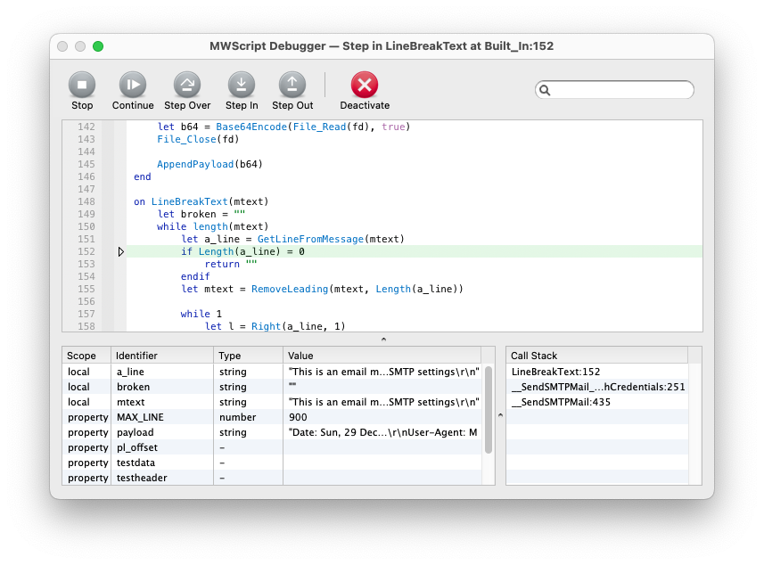

MoneyWorks Manual
The Debugger window

The Debugger contains 3 panes:
- The script with the current line of execution indicated by a ▷ in the margin
- The local variables for the current handler, along with the script's properties. You can double-click array variables to expand, or double-click on strings and tables to show them in a viewer window. The string viewer will show invisible characters such as newlines and tabs and spaces, as well as other ASCII control characters, along with the length in characters and bytes; it will alternatively display a warning if the string is not valid UTF-8 or if it contains a NUL character (these conditions will prevent a string from behaving properly in most situations)
- The call stack — the sequence of handler calls that led to where you are now. You can click on the other points in the call stack to navigate to that point in the script and show that handler's local variables (it may be a different script if you have scripts calling each other via public handlers)
You can resize the panes by dragging the separators between them.
Single-stepping
If you entered the debugger via a breakpoint or interrupting the script via Stop button etc, you can continue or single-step through the script using the toolbar icons (or pressing the indicated key).
- Continue (
c) will continue execution; if there are no further breakpoints or fatal errors, the debugger will close - Step Over (
o) will step to the next line/instruction. Step Over will step over a handler call. - Step In (
i) will step into handler calls. If there is no handler call on the line, it is effectively the same as Step Over.
You cannot step into MoneyWorks intrinsic functions or calls to public handlers in other scripts (to do that, you need to open that script and put a breakpoint in it). <br> <br>If you are at a line with multiple handler calls in an expression (for example an expression like: let a = Foo(5) + Bar(3)), Step In will step into the first one (Foo); to step into Bar you will need to use Step In when exiting Foo.
- Step Out (
u) will execute until the current handler returns to its caller - Stop will abort the current handler call chain and return control to MoneyWorks without deactivating the script. The script will also be opened in the Script editor at the current line
- Deactivate will Stop and deactivate the script, so MoneyWorks will not call your handlers until you reactivate the script. If you close the Scripts window with the script deactivated (thus saving the state to the server), the script will also be deactivated for other users when they next log in.
Changing breakpoints
You can set or clear breakpoints from the debugger by clicking in the breakpoint margin. When you Continue or Step Out, a breakpoint in the intervening code will drop you back into the debugger. Breakpoints set in the debugger will persist until you clear them or until the script is unloaded.
Fatal error
If you entered the debugger due to a fatal runtime error in your script, you cannot Continue execution, but you can examine the call stack and variable values to determine the cause of the error before either Stopping or Deactivating the script. Fatal errors include things like passing the wrong number of parameters to an intrinsic function or a NULL or invalid handle to a function. These are conditions that your script should not allow to happen. If a user without the Scripting privilege gets a fatal error, that will Stop the script for them, but they won't be able to fix the error.
Navigating in the script
As with the Script Editor, you can search the script within the debugger using ⌘-F/Ctrl-F. Highlighted matches can be stepped through with the return key (shift-return to step backwards). Press tab to exit the search field. When the script is active use ⌘-G/Ctrl-G to find the next instance of the highlighted text (Find Selected), or Shift-⌘-G to Find Selected Backwards. Since the text is read-only you can also just use g or shift-G.